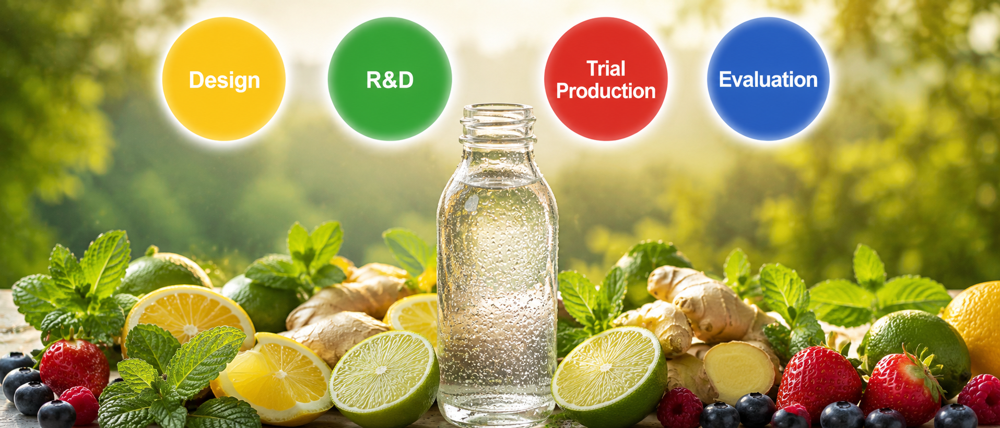

Research & Development
Research and development is the core of what we do. A disciplined four-stage process that moves from concept to production-ready formula — balancing innovation with real-world manufacturing requirements.

Every product begins with an idea — and we take that seriously. New concepts are evaluated against production feasibility, quality preservation requirements, and market acceptance before development begins. This stage defines the commercial and technical parameters that guide everything downstream.
Raw material selection shapes everything downstream. Ingredient sources are assessed for quality consistency, supply reliability, and cost viability. Our R&D centre then produces tailored samples built to the agreed specification — refined through client review cycles until the formulation meets sign-off requirements.
Before full-scale production, every formula runs through a controlled trial on the production line. Process parameters and quality data are captured at each step — validating consistency, yield, and compliance before scale-up approval. Nothing advances without this verification.
No product advances to production scale without passing a comprehensive evaluation. Every formula is tested across storage stability, food safety, microbiological, sensory, and nutritional dimensions — confirming it performs consistently across its full shelf life and across every unit produced.